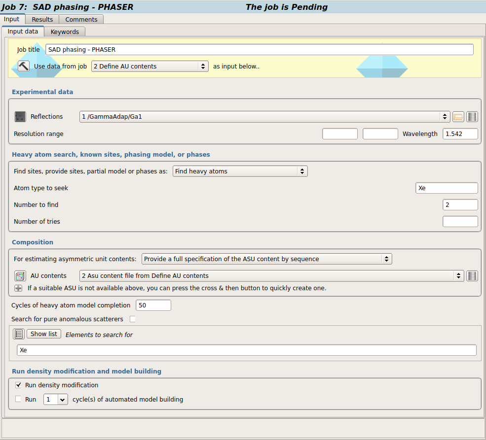
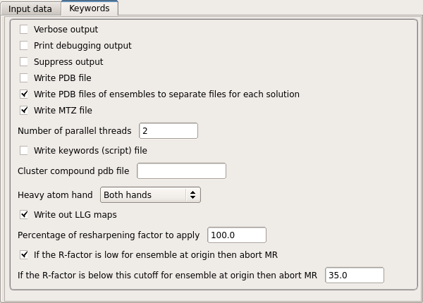

SAD phasing with Phaser¶
{kind=link}
When solving a structure using anomalous data, it can be useful to look for (additional) anomalous scatters which can be used to improve the phasing calculation, or in order to locate anomalous scattering atoms such as sulfurs which may help in building the structure. Anomalous scatterers may be located by using the anomalous differences in combination which phases from a partial structure, for example from molecular replacement.
Input¶
In order to generate an optimal anomalous map, the reflection data (which must include anomalous pairs of reflections) and a set of atomic coordinates (to provide phase information) are required.
Before carrying out SAD phasing in Phaser, you need an atomic model. Several model options are available in CCP4i2.
Find heavy atoms
The minimal Phaser input requires specification of the atom type that provides the anomalous scattering (e.g. Se, S, I, Fe, Zn etc), the number of atoms can be specified if known.
Alternatively, you can provide a partial model of the structure of the macromolecule, with or without a set of anomalous scatterers.
Partial protein/nucleic acid model
For this mode, partial model must be provided. Phaser will phase SAD data and completes the structure from log-likelihood gradient maps using a partial structure as the initial atomic substructure. Only a non-anomalous signal from the partial structure is used.
It’s possible to provide an electron density map as partial model by choosing Map coeeficents for proteinnucleic acid option
A set of resolution limits may optionally be specified to reduce the noise due to missing low resolution terms or larger phase errors at high resolution.
The composition of the unit cell must also be specified, to allow for the contribution of unaccounted for scattering matter to be evaluated. This may be specified in terms of molecular weights or sequences. First, select the type of information to be provided, and then provide the required information in the boxes below.
Destiny modification is performed by Parrot. It improves the initial phases using prior information about protein electron density maps.
Structure rebuilding is usually required after phasing, SAD phasing with Phaser task uses the Buccaneer as a model building program.
Read more about Phaser on Phaser wiki
Keywords¶
 For documentation of the advanced options, see the Phaser documentation.
References